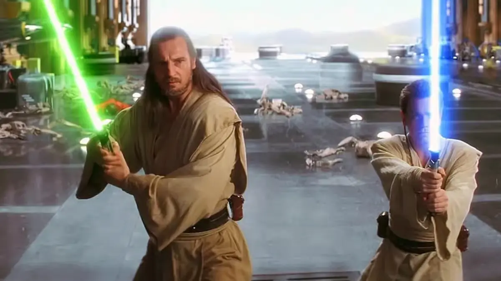

The story starts with us following Jedi Knight Qui-Gon Jinn and his padawan Obi-Wan Kenobi on a mission to negotiate with the Trade Federation. When peace talks fail our heroes navigate their way through the galaxy from Naboo, meeting Jar Jar Binks and Padme Amidala, to Tatooine, where they find a boy named Anakin Skywalker. When fleeing the planet a mysterious man, later identified as Darth Maul, attacks the group. After successfully getting off Tatooine they find themselves back on Naboo and in the throws of war where Qui-Gon and Obi-Wan duel with Darth Maul where Qui-Gon ultimately loses his life and leaves Anakin in the care of Obi-Wan.